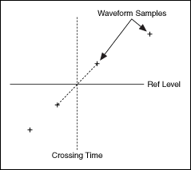
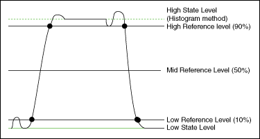

Pulse and transition waveform measurements require a means of identifying the position in time of the waveform feature to be measured. State and reference levels provide a means of accomplishing this identification, resulting in a measurement time interval that you can use as a basis for various time-domain measurements.
Pulses or transitions involve changes in the waveform level between various conditions, or states. The most common case is a two-state waveform with a high state and a low state. For example, an ideal digital signal might be defined as in the high state at 5 volts and in the low state at 0 volts.
Reference levels allow you to extract information from the waveform by identifying reference level crossings. Two adjacent waveform samples separated in magnitude by a reference level constitute a reference level crossing. Linear interpolation gives an approximation to the exact time instant of a reference level crossing, as shown in the following illustration.

You can specify reference levels as a percentage of the state levels, with the low state and high state corresponding to 0 and 100%, respectively. The most common low, mid, and high reference levels are 10, 50, and 90%. The following illustration shows a typical selection of state and reference levels for a pulse waveform.

The histogram method was used to determine the state levels. The histogram method has the advantage of excluding the undershoot and overshoot peaks.